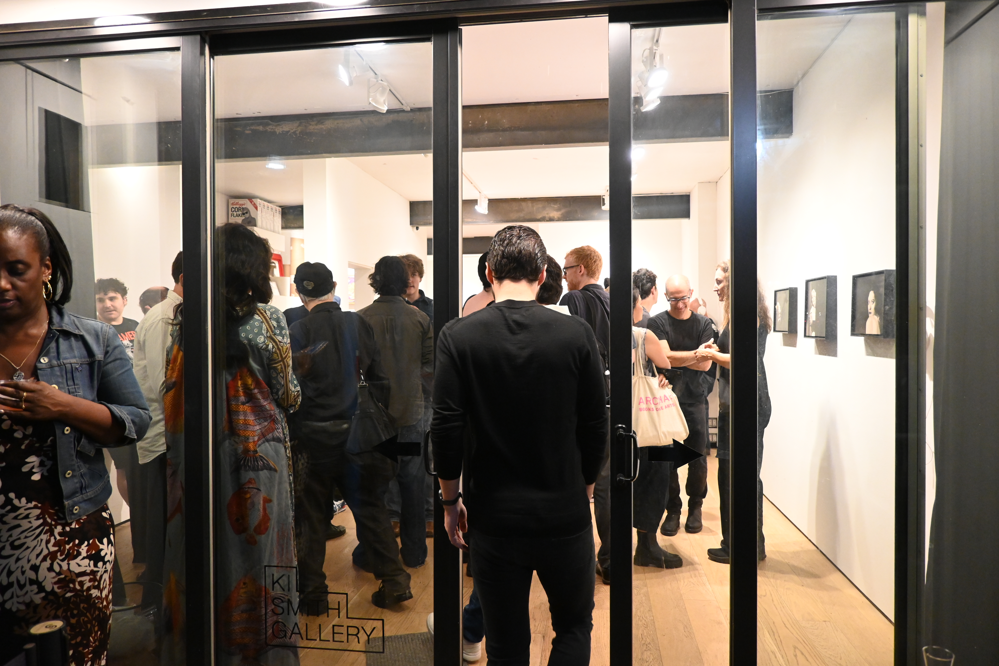

Below are some examples of, as well as information about requesting custom work. Commissioned works are available on a first come first serve basis, with limited availability through Spring 2027.
Jordyn, 2025
Graphite and Charcoal on Paper, 2026, Size 13 in. x 17 in.
Above is a drawing done with graphite and charcoal on paper. If you are interested in one in this style, please send me an inquiry, and we can discuss specifics. I prefer to work at larger scales, but am happy to execute smaller works of relatives, places, objects, or custom illustrations. I work best with Graphite and Charcoal, but can also use gouache, watercolor, or ink if desired. All works signed in verso, are will have framing, shipping, and certificate of authenticity included in sale price.

Opening, 2025
Digital Photograph, 2025, Shot on Nikon Z FC Size 5568 px x 3712 px
In addition to being classically trained in observational drawing and painting, I carry this skillset to any and all photography I do. I have example bodies of work available for commercial, event, architectural, or personal styles. Commissioned work can be customized for size, finish, display, and frame, all included in final sale price; alongside certificate of authenticity.
Inquiries:
~
t: +1 (210) 502-1725
rene@kismithgallery.com